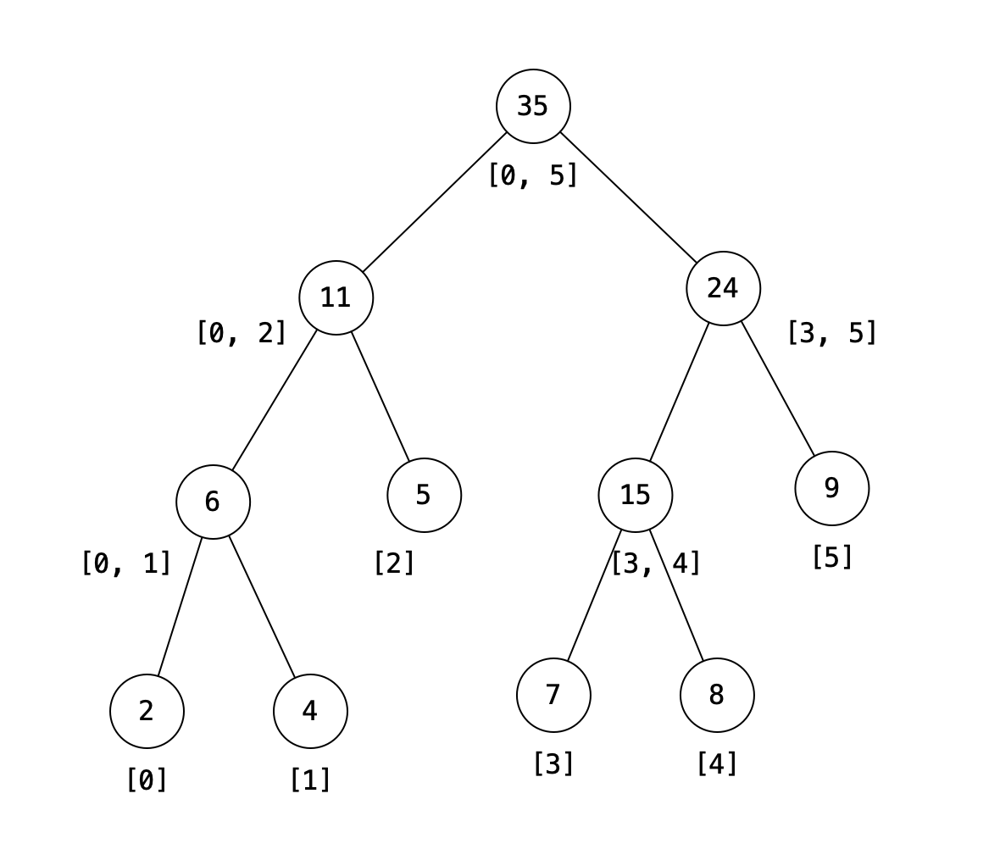

主要利用树的层次结构来分拣、存储、查询事物的区间信息，有数组或者链表两种实现方式。
先搭建树型，再动态更新节点信息。
// 1.1 以链式结构存储线段树
struct SegTreeNode {
SegTreeNode *lchild, *rchild;
int cnt;// 节点信息：计数
int low, high;
SegTreeNode(int l, int h):low(l), high(h), lchild(nullptr), rchild(nullptr), cnt(0){}
static SegTreeNode* InitSegTree(int l, int h)
{// 在[l, r]区间初始化线段树的基础结构，
// 此时线段树没有存储额外信息。
SegTreeNode* root = new SegTreeNode(l, h);
if (l == h) return root;
else {
int m = (l + h) / 2;
root->lchild = InitSegTree(l, m);
root->rchild = InitSegTree(m+1, h);
return root;
}
}
bool insert(int val)
{// 对应区间的计数加1
if (val < low || val > high) return false;
cnt ++;
if (low == high) {}
else if (val <= (low + high) / 2) lchild->insert(val);
else rchild->insert(val);
return true;
}
int query(int l, int h)
{// 查询对应区间
// 不相交
if (l > high || h < low) return 0;
// [l, h]包含[low, high]
else if (l <= low && h >= high) return cnt;
// 其它
else return lchild->query(l,h) + rchild->query(l, h);
}
};类似于堆的连续存储实现，也是先固定树型，再更新节点信息。
1、创建线段树 解释：这里使用了2n长度的数组存储线段树，其中n为叶子节点数组，实际使用的是1到2n-1位置的空间。在实现堆时需要证明一个性质:对于一个逐层构建的有m个节点的二叉树，共有floor(m/2)个中间节点，其中floor表示向下取模，于是我们总是（不管n的奇偶性）可以用n-1个中间节点和n个叶子节点逐层构建二叉树。 提醒：根节点编号是1。（参考堆的实现）
2、更新 提醒：pos%2==0表示左节点；反之右节点。（堆）
3、范围查询 注意什么时候分别做左移、右移、上移。

class SegTree {
int* tree; // segment tree
int n; // number of leaves
public:
NumArray(vector<int>& nums) {
n = nums.size();
tree = new int[2*n];
for (int i = n, j = 0; i < 2*n; i ++, j ++)
tree[i] = nums[j];
for (int i = n - 1; i > 0; i --)
tree[i] = tree[2*i] + tree[2*i+1];
}
void update(int index, int val) {
// botton-up
int pos = index + n;
tree[pos] = val;
do {
int left = pos;
int right = pos;
if (pos % 2 == 0) {
// this is a left child
right = pos + 1;
} else {
left = pos - 1;
}
pos = left / 2;
if (pos > 0) tree[pos] = tree[left] + tree[right];
} while (pos > 0);
}
int sumRange(int left, int right) {
int l = left + n, r = right + n;
int sum = 0;
while (l <= r) {
if (l % 2 == 1) {
// l is a right child, move right
sum += tree[l];
l ++;
}
if (r % 2 == 0) {
// l is a left child, move left
sum += tree[r];
r --;
}
// move up
l /= 2;
r /= 2;
}
return sum;
}
};